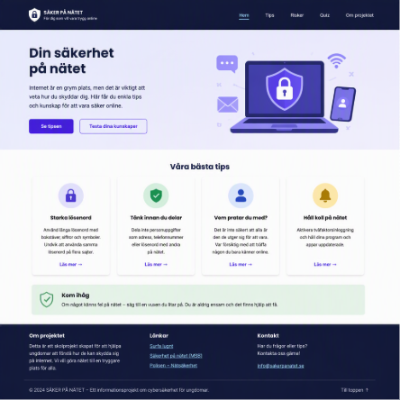

PROJEKT
Det jag har byggt och arbetat med
Här samlar jag projekt och webbutvecklingsuppgifter som
visar min utveckling inom IT. Projekten har olika syften,
men gemensamt är att de hjälper mig att träna på att
planera, skriva och testa kod.
Jag försöker använda projekten som ett sätt att förstå
tekniken bättre. Därför arbetar jag inte bara med själva
resultatet utan även med struktur, tillgänglighet,
responsivitet och problemlösning.

CyberSafe
CyberSafe är ett informationsprojekt om cybersäkerhet
som jag har utvecklat som en del av mitt gymnasiearbete.
Projektets mål är att presentera säkerhetsinformation
på ett enkelt och tydligt sätt.
Webbplatsen behandlar bland annat lösenord, phishing,
skadlig kod, mobil säkerhet och säkerhet på sociala
medier.
Jag har lagt fokus på tydlig navigation och separata
sidor så att användaren enkelt kan hitta den information
som behövs.
Teknik
- HTML
- CSS
- JavaScript
- Responsiv webbutveckling
Responsive Portfolio
Det här är min egen portfolio där jag presenterar
mina kunskaper, projekt och utveckling inom IT.
I projektet arbetar jag med semantisk HTML och
en gemensam CSS-fil. Jag använder Flexbox för
navigation och andra linjära layouter samt Grid
för projekt och innehåll som behöver organiseras
i flera kolumner.
Jag använder också media queries för att ändra
layouten när viewporten blir tillräckligt bred.
På så sätt kan samma HTML fungera på både små
och stora skärmar.
Teknik
- Semantisk HTML
- CSS Grid
- Flexbox
- Media queries
- DevTools
Webbutvecklingsövningar
Under webbutvecklingskursen har jag arbetat med
flera olika övningar som har hjälpt mig att förstå
grunderna i HTML och CSS.
Jag har bland annat byggt semantiska sidor, arbetat
med relativa sökvägar, tillgängliga formulär,
tabeller och navigation.
Jag har även arbetat med CSS och lärt mig att använda
webbläsarens DevTools för att undersöka hur CSS-regler
påverkar ett element.
Områden
- HTML-struktur
- Sökvägar
- Formulär
- Tabeller
- Tillgänglighet
- CSS och DevTools
Vad projekten har lärt mig
Genom projekten har jag förstått att en webbplats behöver
planeras innan man börjar skriva all kod. Struktur,
navigation och innehåll påverkar hur enkelt det blir
att utveckla resten av webbplatsen.
Jag har också lärt mig att responsiv design inte bara
handlar om att göra text och bilder mindre. I vissa
situationer behöver själva organisationen ändras,
exempelvis från en kolumn till två eller tre kolumner.